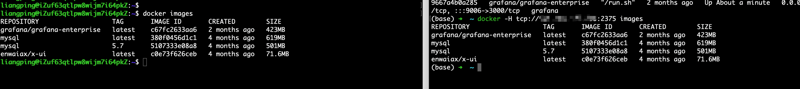
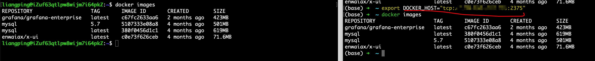

install docker package
pip install docker
配置docker dameon host
如果访问的是本机的docker server，不需要该步骤，该步骤主要是为了允许docker engine 外部访问 按照官网的configuring-remote-access-with-daemonjson文档操作我这边docker重启失败了，通过命令
sudo journalctl -eu docker可以看到失败的日志，通过搜索日志，发现了Troubleshoot conflicts between the daemon.json and startup scripts该文档，问题最终得到了解决。
主要配置步骤如下：
# 如果文件夹已存在，则不需要重复创建
sudo mkdir /etc/systemd/system/docker.service.d
sudo vi /etc/systemd/system/docker.service.d/docker.conf
将下面的内容copy进去
[Service]
ExecStart=
ExecStart=/usr/bin/dockerd -H fd:// -H tcp://0.0.0.0:2375
Reload the systemctl configuration
sudo systemctl daemon-reload
Restart Docker.
sudo systemctl restart docker.service
Verify that the change has gone through.
liangping@iZuf63qtlpw8wijm7i64pkZ:~$ sudo netstat -lntp | grep dockerd
tcp 0 0 127.0.0.1:2375 0.0.0.0:* LISTEN 1913118/dockerd
按照以上步骤操作完后，就可以支持远程访问了docker engine了

或者通过设置环境变量的方式访问

python使用docker sdk
下面举个简单例子，更多用法可以直接参考官方文档
- run a container
import docker # client = docker.from_env() # use local docker # custom other docker daemon server client = docker.DockerClient(base_url='tcp://{ip}:2375') container = client.containers.run("alpine", ["echo", "hello", "world"], name='test', remove=True) print(client.containers.list(all=True))- load local image ```python import docker
client = docker.from_env() # use local docker
custom other docker daemon server
client = docker.DockerClient(base_url='tcp://{ip}:2375') with open("{image_tar_path}", 'rb') as f: client.images.load(f)
- 容器内部访问本机docker api
> 按照上面的daemon host方式配置也是可以的，不过访问本机的，由于一些服务器没有修改配置的权限，因此，最好可以在不改变docker配置的情况下，也可以在容器内部访问本机docker api，默认情况下，Docker守护进程会生成一个 socket（/var/run/docker.sock）文件来进行本地进程通信（只能在本地使用 docker 客户端或者使用 Docker API 进行操作）。sock 文件是 UNIX 域套接字，它可以通过文件系统（而非网络地址）进行寻址和访问。**因此只要以数据卷的形式将 docker 客户端和上述 socket 套接字挂载到容器内部**就可以了实现在docker内部访问宿主机的docker api了
docker run --name test_docker -idt \ -v /var/run/docker.sock:/var/run/docker.sock \ -v /usr/bin/docker:/usr/bin/docker \ python:3.8
这个容器内部就可以正常的访问docker api 了
<img src="picture/docker-sdk-with-python/container-use-docker-api.png" alt="" width="100%">
- 使用docker api，挂载的文件，都是在容器所在服务器的文件目录
/test 在其他服务器上跑的时候，挂载的是docker 服务器的/test 目录
docker run --name ng3 --network custom-local-net -v /test/:/usr/share/nginx/html:ro -d nginx ```
相关文档
- docker sdk
文档中docker engine 默认的都是本地的，如果要使用其他机器的docker engine，要进行相关设置，设置可以看 docker daemon host
- docker sdk for python
- docker daemon host
- Troubleshoot conflicts between the daemon.json and startup scripts
- dockerd